Activity: Applying a symmetric about relationship
Learn how to make features (1) and (2) symmetric to a target face about a symmetry plane (3).
Click here to download the activity file.
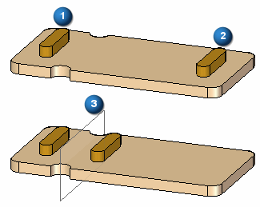
If you are using Internet Explorer and a video is not displaying in your training guide, click the Tools tab (or gear icon)→Compatibility View settings, and then clear the selection of Display intranet sites in Compatibility View.
Open symmetric_about.par.
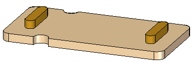
Problem: Make feature (1) symmetric to feature (2) about the symmetry plane (3).
Apply a rigid relationship to feature (2). You do this because relationships are applied to faces. You want the entire feature (2) to move with the face that has a symmetric relationship applied to it.
In PathFinder, select Protrusion B.
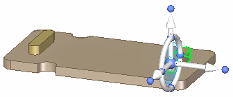
On the Home tab→Face Relate group, choose the Rigid relationship command .
On the command bar, click the Accept button.
On the Home tab→Planes group, choose the Coincident Plane command.

Select the face shown.
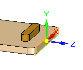
Move the coincident plane a distance along the axis direction that extends to the arc center shown.
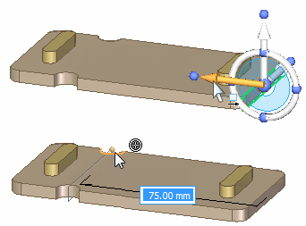
Select the face shown.
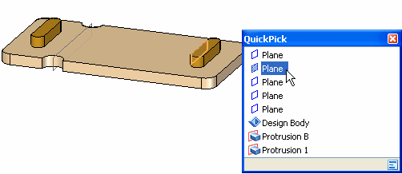
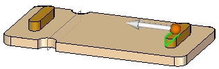
On the Home tab→Face Relate group, choose the Symmetry relationship command .
Select the face shown as the target symmetric face and then right-click to accept.
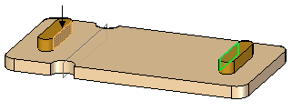
Select the plane shown for the symmetry plane.
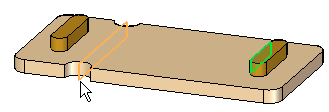
On the command bar, click the Accept button.
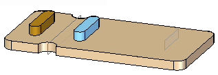
A symmetry relationship is automatically persistent.
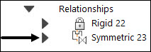
Select the face shown. Click the axis and dynamically move it. Notice that the features Protrusion A and Protrusion B move symmetrically.
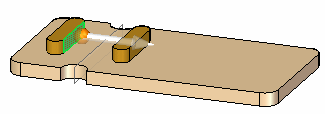
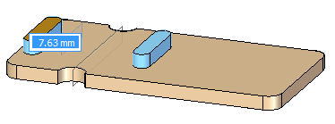
This completes the activity.
In this activity you learned how to make two faces symmetric about a plane. The selected face (seed face) is modified to be symmetric to a target face about a symmetry plane. Use the Symmetry relationship command. Only the seed face moves unless a rigid relationship is applied to the other faces that are to move along with the seed face.
Close the file and do not save.
Click the Close button in the upper-right corner of the activity window.